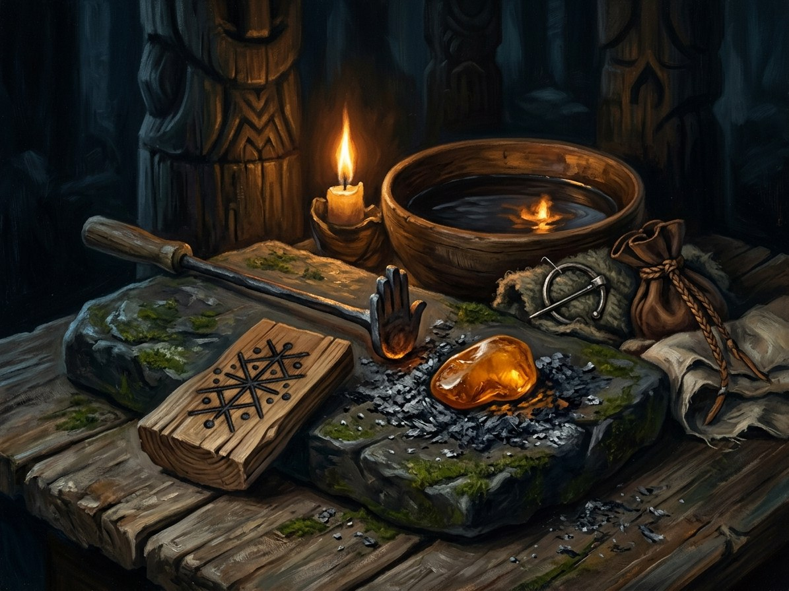

Ženklai (signs)¶
Ryšiai
Practitioners: Žiežirba (the Flame-Keeper, Book V POV) (1410–…) — tier 2
- School
- Asked power · the way to enchant objects
- Tier
- Tier 0 can use a fed sign; tier 2 (burtininkas, sign-carver) makes warded objects
- Casting
- Carve, burn, weave or embroider the sign, then feed it
- Components
- The sign, and a feed: blood for a strong sign, milk for a gentle one, ash for a binding one
- Cost
- The feed. A sign fades if not fed
- Duration
- A charm-object (one sign) fades in a season. A warded object (several signs, fed by an owner) lasts a lifetime
- Limits
- A sign carved by a baptised hand works only if the carver means it. On iron it is twice as strong but angers the laumės
- Counters
- Neglect (it fades); consecrated stone (half strength, if meant); a broken sign reverses for a night
Signs of house and oath. Saulutė repels night spirits (milk at dawn). Perkūnėlis wards lightning and marks an oath (blood, once). Žalčiukas warns of poison (milk weekly). Laimos medis eases childbirth.
Signs of sight and hiding. Žvaigždutė helps sight-workings. Žirgeliai turn aside unbound spirits. Mėnulio pjautuvas hides by distraction, not illusion (ash).
The bound object. Signs plus a Kalba working plus blood make an artifact. Kęstutis's sword carries a perkūnėlis under its grip.
A broken sign. Reverses for a night.
Failing signs. The rust on Kęstutis's sword is the sign failing because the Pact is cracking.
Ženklai (signs)

Ženklai (signs) · school¶
Tipas |
school |
Family |
asked |
Pastaba |
Ženklai: sacred carved glyphs, wards, and symbols imbued with persistent intent. |
What it is¶
Carved signs: stored intention, the way to enchant objects. A sign is carved, burned, woven or embroidered, then fed: blood for a strong sign, milk for a gentle one, ash for a binding one.
Who can use it (path & tier)¶
Tier 0 can use a fed sign; tier 2 (the burtininkas or sign-carver) makes warded objects; a bound object (signs plus Kalba plus blood) becomes an artifact. The Trakai smith, Kęstutis and the Flame-Keeper (from 1410) all carve.
How it works (medium, words, timing)¶
Common signs: the saulutė (sun-wheel; repels night spirits; milk at dawn); perkūnėlis (thunder-cross; wards lightning, breaks curses on a threshold, marks an oath; blood once); žalčiukas (zigzag; house-luck, warns of poison; milk weekly); Laimos medis (eases childbirth); žvaigždutė (helps sight-workings); žirgeliai (roof-horses turn aside unbound spirits); mėnulio pjautuvas (hides things by distraction, not illusion; ash).
Kaina¶
The feed (blood, milk, ash). A sign fades if not fed; a broken sign reverses for a night; Kęstutis’s sword rusts as the sign under its grip fails when the Pact cracks (Book I ch. 2, the sword).
Limits & counters¶
Signs on iron are twice as strong but anger the laumės. A sign carved by a baptised hand works only if the carver means it (Law of Truth). Inside consecrated stone it works at half strength if meant: masons‘ saulutės in Gothic vaults are the last ward on Vilnius (Book II ch. 11; Book V ch. 20, eight on the cathedral crypt’s vault keys).
Folk basis [Historical record]¶
[Historical record]. Baltic folk ornament carries sun-wheels, the perkūnėlis („Perkūno cross“), grass-snake zigzags, Laima’s tree and the Austras tree, carved on lintels, spindles, cradles, beehives, belts and the horse-head gables (žirgeliai) of roof-ridges. The identifications with gods and the idea of „feeding“ a sign are later reconstruction.
Notable practitioners¶
Kęstutis burns a perkūnėlis under his sword’s grip; the Trakai smith fits one on every sword and „feeds it once with the prince’s blood“ (Book VI ch. 1, 4, 16, 30). Vytautas feeds it with his own palm blood before the oath (Book III ch. 17). Elena’s tow-knot (Book I ch. 12) and Galminas’s warding face-marks (Book III ch. 1) are the Root-Mother’s signs.
Sąsajos¶
graph LR
flame_keeper["Žiežirba (the Flame-Keeper, Book V POV)"]
zenklai["Ženklai (signs)"]
flame_keeper -->|Practises| zenklai
style zenklai stroke-width:3px